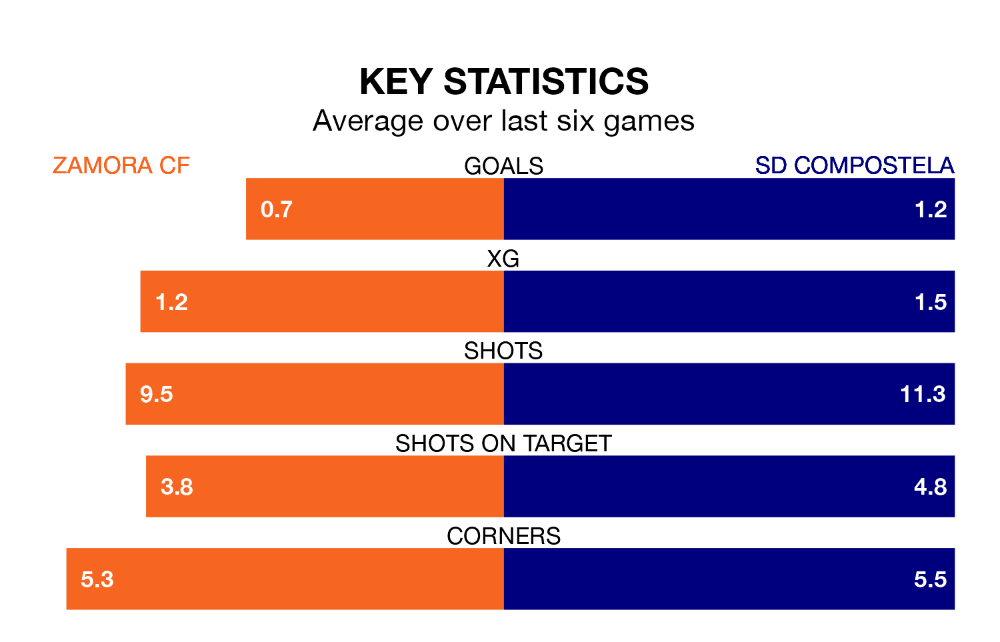

Zamora CF face SD Compostela on Sunday seeking to protect their long unbeaten run in Segunda División RFEF Group 1.
Zamora are unbeaten in six, with two wins and four draws, ahead of the 4.30pm kick-off.
They face a Compostela team who have won three and drawn one over the same number of games.
With 21 goals in 20 games so far this season, Zamora are scoring at below the league average rate with 1.0 goals per game. But they are conceding fewer than average too, letting in nine goals at a rate of 0.4 per game.
Compostela, meanwhile, are above average scorers, with 1.2 goals per game, compared to a league average of 1.1. They have conceded 1.0 goal per game.
The hosts are third in the table after 20 games, of which they have won 11 and drawn six, earning 39 points.
The away team are three places behind Zamora in sixth, with nine wins and four draws putting them on 31 points.
In the last 10 years, Zamora and Compostela have played each other on eight occasions. Zamora won one of them, Compostela three, and they drew four times.
On average, Zamora scored 0.6 goals and Compostela 1.4 in those matches.
Their last meeting was on September 24, when Zamora won 1-0 away.
Zamora's last match was on January 27, a 0-0 draw against CD Guijuelo.
Compostela beat Covadonga 2-0 last time out, also on January 27.
Updated: 10:03 (UTC), 30/01/24